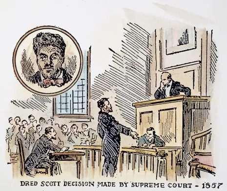
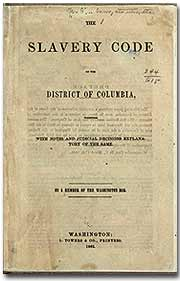
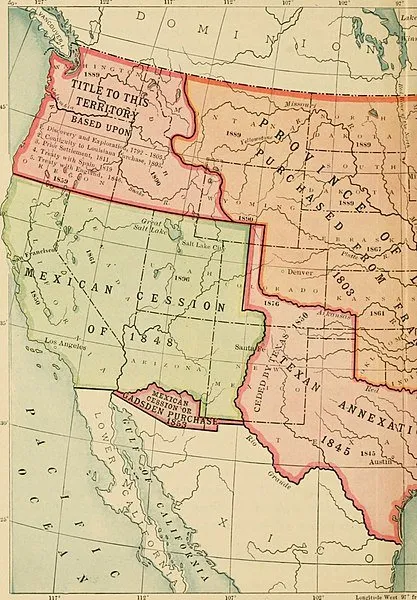
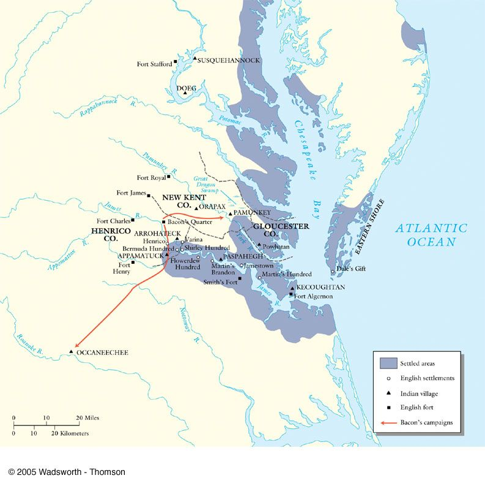
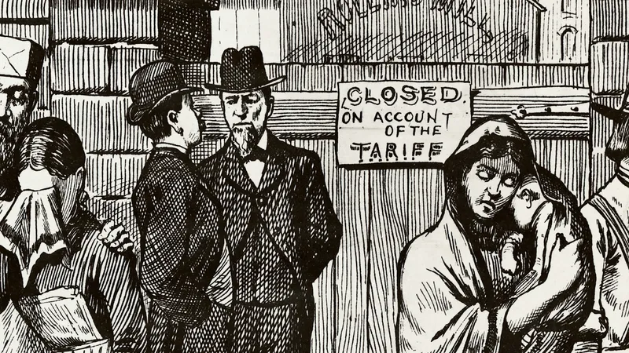

-
1640 | John Punch
CloseJohn Punch was a slave who was one of the three men who attempted to escape from Virginia. Punch tried to escape alongside two white servants, but was captured in Maryland and brought back.
A decision was made to only give the two white servants additional years to their servitude, John Punch was sentenced to slavery for life. This marked the earliest distinction between indentured servitude and hereditary slavery in the U.S.
After the John Punch decision, the practice of hereditary slavery began expanding significantly, adn it was a key issue dividing the North and the South. Before this case, many African laborers were treated very similarly to European indentured servants, but the John Punch decision created a significant change in the practice of slavery, making it more common for servitude to be extended for life.
-
1775 | Dunmore Proclamation
Close The Dunmore Proclamation was a document created by Lord Dunmore, along with John Murray and Virginia’s royal governor. The proclamation declared that any enslaved people willing to fight for the British would be freed.
The Dunmore Proclamation was a document created by Lord Dunmore, along with John Murray and Virginia’s royal governor. The proclamation declared that any enslaved people willing to fight for the British would be freed.
The Dunmore Proclamation was one of the earliest signs that slavery would be an issue that would be present for a very long time in the Americas. In Virginia and other Southern colonies, it increased sectional tension between pro-slavery and anti-slavery factions.
Lord Dunmore reported that about 300 enslaved people joined his “Ethiopian Regiment,” creating fear among plantation owners, although the number was smaller than Dunmore had originally expected.
The Dunmore Proclamation also cause the formation of multiple local militias in Virginia to protect their homes and plantations because of a fear of British attack and uprisings. The military expiditions Dunmore led to suppress Patriot uprisings with the newly formed militias led to the Battle of Great Bridge on December 9th, 1775 at the Southern Branch of the Elizabeth River, which was a significant Patriot victory, with the British losing over 100 men. These events sparked a debate about how the future of slavery should go, and increased sectional tensions between free and slave states.
-
1846-1857 | Dred Scott Decision
Close A slave named Dred Scott sued for his freedom in 1846 after being taken to free territories, and In 1857, in a decision led by Roger Brooke Taney, it was decided that the Missouri Compromise was unconstitutional and denied citizenship to any free black people.
This decision outraged many people in the North, where many people wanted to stop the expansion of slavery. This increased the intensity of sectional tension in the United States and effectively opened all territories in the West to slavery.
-
1660-1670 | Slave Codes
Close The Slave Codes were a set of rules which determined the rights and freedoms of enslaved people in the 17th century. They included the following rules:
- Enslaved people were considered property instead of people. Slave Codes, although different in seperate states, often stated that enslaved people could be bought, sold, or inherited like property.
- Slaves were prohibited from leaving their owner’s property without permission
- If a slave owner had suspection that a slave was planning rebellion or escape, or they attempted to escape or rebel, Harsh punishments were used like whipping, branding, and in come cases, execution.
- Slave codes made it illegal to educate enslaved people because of a fear of them gaining the knowledge to resist, like in the case of Dred Scott, where he tried to sue for his freedom.
- Slaves were forbidden to gather in large groups or own weapons.
The slave codes restricted the rights of enslaved people heavily and also institutionalized racial discrimination, and influenced the social hierarchy of the South during this time. Due to this, many people in the south began to believe that any calls from the North for emancipation was a threat to their way of life.
The Slave Codes also caused more people to fear rebellion, because they were formed as a response to the existing fear of rebellion, and strengthened after the Stono Rebellion in 1739.
-
1793 | The Cotton Gin
CloseIn 1793, Eli Whitney invented th cotton gin, which shaped the economic environment in the United States and increased sectional tensions prior to the Civil War. It was used for separating cotton fibers from seeds, which was previously labor-intensive in nature and limited the amount of that crop produced. With the advent of the cotton gin, cotton turned out to be much more profitable, and thus came the demand for slavery.
In the North, industrialization made less people want to own slaves, and as the abolitionist movement gained momentum, the north wanted to end slaver.
However, the South, majorly because of the cotton gin, wanted to keep slave labor going in order to sell more valuble cash crops, and there were nearly 4 million enslaved people in the U.S. already by 1860.
The debate over slavery in new territories became more of an issue in the 1800s due to the Missouri Compromise and the Compromise of 1850, and the cotton gin’s role in driving the demand for slave labor helped create sectional conflicts that lead to the civil war when Southern leaders fought to protect slavery while Northern leaders fought to end it.
-
May 30th, 1854 | Kansas-Nebraska Act
Close Senator Stephen Douglas of Illinois introduced a bill in January 1854 that created the territories of Kansas and Nebraska out of the area just west of Missouri. He promoted popular sovereignty, which holds that the decision over whether or not slavery is permitted in new areas should be made by the local population. The map to the right is the Reynold’s Political Map of the United States, which was meant to showcase the area of the free states and the slave states compared to one another. The map was used in an 1856 political campaign for John Fremont, emphasizing the question of wether or not the Kansas-Nebraska act should be repealed.
Senator Stephen Douglas of Illinois introduced a bill in January 1854 that created the territories of Kansas and Nebraska out of the area just west of Missouri. He promoted popular sovereignty, which holds that the decision over whether or not slavery is permitted in new areas should be made by the local population. The map to the right is the Reynold’s Political Map of the United States, which was meant to showcase the area of the free states and the slave states compared to one another. The map was used in an 1856 political campaign for John Fremont, emphasizing the question of wether or not the Kansas-Nebraska act should be repealed.
Opponents of the Act formed the Republican party, which made the divide between the North and the South of the United States much more prominent and was a key cause of the Civil War.
 The Wilmot Proviso had a negative effect on the sectional tensions of the time by proposing banning slavery in any new territories, although it did not pass. The Wilmot Proviso also affected the Kansas-Nebraska act in that it led to the development of new parties like the Free-Soil party, which played a role in the decision to use popular sovereignty in the new regions. The map to the right shows the new territories gained during the mexican cession, showing the amount of land that would have been affected, as well as the type of terrain in the area, showing what people would be moving there for work and what the economic demographic may look like.
-
1676 | Bacon's Rebellion
Close In 1676, Nathaniel Bacon, a wealthy planter, led a rebellion against the Virginia government. The rebellion was sparked by frustrations about the handling on attacks on frontier settlements and the raising taxes in Virginia. Bacon’s followers largely consisted of poor frontier settlers, indentures servants, and enslaved people. The rebellion was quickly suppressed after Nathaniel Bacon died of dysentary on October 26, 1676, shortly after King Charles II sent a squadron to suppress the rebellion. This map shows the route that the Bacon’s Rebellion went on, starting in Occonecchee terriotory, where Nathaniel bacon's men murdered many of the tribe's people, and ending in Pamunkey, right next to Jamestown, which was burned. Although the name isn’t shown on the map, West Point, right next to Pamunkey, is where Nathaniel Bacon died of dysentary, ending the rebellion.
Before the rebellion, Nathaniel Bacon wrote a list of complaints called the Declaration in the Name of the People of Virginia on July 30, 1676, directly against William Berkely, including the line “Of this and the aforesaid articles we accuse Sir William Berkeley as guilty of each and every one of the same, and as one who has traitorously attempted, violated, and injured his Majesty’s interest here by a loss of a great part of this his colony and many of his faithful loyal subjects by him betrayed and in a barbarous and shameful manner exposed to the incursions and murder of the heathen.” This quote accuses Berkely of betraying the interests of the British crown, Neglecting the defense of the colony of Viirginia from attacks by Native American Tribes in the phrase “exposed to the incursions and murder of the heathen.” This quote reveals that many of the colonists are deeply dissatisfied with the government’s management of Virginia and its perceived favoritism towards elite landowners. This increases the tension between economic classes in that time period, which in turn created a sharp divide between the slave-owning elite and the poor, which increased sectional tension between the free and slave states later in history.
Bacon’s rebellion had very significant long-term implications, especially in shaping colonial policy and social dynamics between classes. Following the rebellion, the Virgina government made several changes, including a shift from relying on indentured servitude to a system of permanent slavery. Most wealthy land owners, seeking to avour unrest among poor white settlers, accepted this shift, increasingly turned to slave labor.
While the rebellion did not directly lead to the civil war, it began to show some of the issues that would contribute to the conflict, such as the discontent among the lower classes, and an increasing reliance on slavery, as well as showing the willingness of people to rebel, indirectly leading to many other rebellions and action which would inspire the American Civil War.
-
1828 | South Carolina Exposition
Close The South Carolina Exposition and Protest was a document written by John C. Calhoun in 1828 that opposed the Tariff of 1828 because he believed it harmed Southern states by imposing high tariffs on imported goods, which was seen as a way for the North to economically dominate the South. In this Exposition, he introduced the idea of nullification, saying that individual states had the right to nullify federal laws they thought were unconstitutional.
When South Carolina attempted to nullify federal tariffs during a state convention in 1832, they also stated that any attempts to enforce the tariffs would result in South Carolina seceding from the Union.
After this, Andrew Jackson responded with a Proclamation declaring that nullification was an illegal practice, and got Congress to pass the Force Bill in 1833, allowing the government to use military force to enforce the tariffs in South Carolina. This created a lot of sectional tension, making the divide between the North and the South even more prominent, and was one of the biggest causes of the Civil War.
-
October 18th, 1854 | Ostend Manifesto
CloseThe Ostend Manifesto was a proposition to purchase Cuba from Mexico backed by Pierre Soulé and written by James Buchanan. Three American diplomats met in Ostend, Belgium from October 9-11, 1854, then moved to Aachen, Prussia to prepare a report. The report contained the line “Cuba is as necessary to the North American republic as any of its present members, and that it belongs naturally to that great family of states of which the Union is the Providential Nursery,” which angered many Northerners who saw expanding to Cuba as a way to expand the reach of Slavery.
The manifesto was seen as unconstitutional and was immediately shot down by the Northern public when it was revealed in 1854. This escalated the tensions between the North and the South.
Site made by Linus Honer
Donoghue, John. “Out of the Land of Bondage”: The English Revolution and the Atlantic Origins of Abolition : The American Historical Review. academic.oup.com/ahr/article/115/4/943/35810?login=false.
Coates, Rodney. “Law and the Cultural Production of Race and Racialized Systems of Oppression.” Sage Publications. web.pdx.edu/~ingham/syllabi/Perspectives/LawHistRacism.pdf.
Buchanan, James et al. 1854. The Ostend Manifesto. Lovell & Co.
N. Currier, and Louis Maurer. The Ostend doctrine. Practical Democrats carrying out the principle. [N.Y.: For Sale by Nathaniel Currier at no. 2 Spruce St] Photograph. Retrieved from the Library of Congress, www.loc.gov/item/2003656587/.
McNamara, Robert. “Ostend Manifesto, Controversial Proposal for US to Acquire Cuba.” ThoughtCo. www.thoughtco.com/ostend-manifesto-4590301.
Ashcroft, John et al. “Missouri's Dred Scott Case, 1846-1857.” Missouri Digital Heritage. www.sos.mo.gov/archives/resources/africanamerican/scott/scott.asp#:~:text=Missouri's%20Dred%20Scott%20Case%2C%201846,Missouri%20Compromise%20to%20be%20unconstitutional.
Konig, David Thomas. The Long Road to Dred Scott: Personhood and the Rule of Law in the Trial Court Records of St. Louis Slave Freedom Suits. UMKC Law Review. www.sos.mo.gov/CMSImages/MDH/TheLongRoadtoDredScott.pdf.
Onion, Amanda et al. “Kansas‑Nebraska Act.” History.com. www.history.com/topics/19th-century/kansas-nebraska-act.
Lamm, Alan. “Slave Codes.” North Carolina Encyclopedia. www.ncpedia.org/slave-codes.
Bridges, Rogers. “CODES” Illinois Periodicals Online. www.lib.niu.edu/1996/iht329602.html.
Adelman, Garry et al. “The Wilmot Proviso.” American Battlefield Trust. www.battlefields.org/learn/articles/wilmot-proviso.
Rice, James. “Bacon’s Rebellion (1676–1677).” Enyclopedia Virginia. encyclopediavirginia.org/entries/bacons-rebellion-1676-1677/.
Bosket, Jamie et al. “Bacon's Rebellion in Virginia in the years 1675 & 1676” Virginia Museum of History and Culture. virginiahistory.org/learn/bacons-rebellion-virginia-years-1675-1676.
Onion, Amanda et al. “Cotton Gin and Eli Whitney.” History.com. www.history.com/topics/inventions/cotton-gin-and-eli-whitney.
Youngman, Anna. The Fortune of John Jacob Astor. Journal of Political Economy, 1908.
Britannica, The Editors of Encyclopaedia. “The American Fur Company.” Encyclopaedia Britannica. www.britannica.com/money/American-Fur-Company.
Tarter, Brent. “Nathaniel Bacon (1647–1676).” Encyclopedia Virginia. encyclopediavirginia.org/entries/bacon-nathaniel-1647-1676/.
Bacon, Nathaniel. “The Declaration.” History Hatters. historymatters.gmu.edu/d/5800.
Carter, Linda. “Bacon’s Rebellion and the Defeat of the Saponi Tribes at Occoneechee Island.” Searching for Saponitown. saponitown.com/bacons-rebellion-and-the-defeat-of-the-saponi-tribes-at-occoneechee-island/.
Willson, Mitchell et al. “Eli Whitney: The Inventor” The Eli Whitney Museum and Workshop. www.eliwhitney.org/museum/about-eli-whitney/inventor.
Newman, John et al. United States History. Des Moines, Iowa, Perfection Learning, 2008.